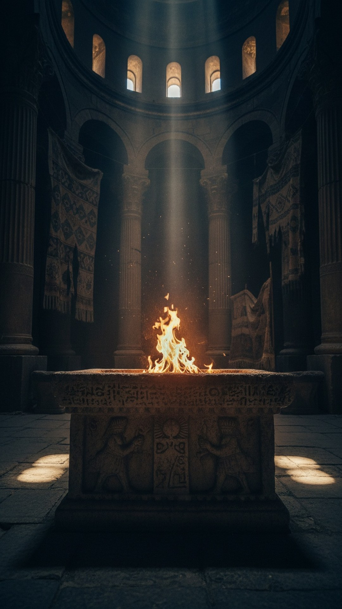

Open the early books of the Hebrew Bible and try to find the devil. He is not there. Try to find heaven and hell as destinations for human souls. Not there. A resurrection of the dead at the end of time, a final judgment, armies of named angels. None of it is there. Then the Jews spend two centuries inside the Persian Empire, and when the literature resumes, all of it is suddenly there.
The empire that ruled them had a religion, and that religion already contained every one of those ideas. Its prophet was Zoroaster, and he may be the oldest figure in this entire series. This is part 9 of THE BLUEPRINT, and it is different from the parts before it: this time the parallel is not a dying god. It is the architecture of the afterlife itself.

The prophet before the prophets
Zoroaster's hymns, the Gathas, are composed in a language so archaic that linguists date them the way they date the oldest Sanskrit hymns of India, to which they are nearly sister texts. Mary Boyce, the twentieth century's leading scholar of the religion, placed Zoroaster between 1200 and 1000 BC, centuries before Israel's writing prophets. And the Gathas already contain the machinery: a wholly good God, Ahura Mazda, opposed by a destructive spirit, Angra Mainyu. Two hostile cosmic powers, light against darkness. In Yasna 30 the prophet calls them twin spirits locked in conflict since the beginning.
Every soul, Zoroaster taught, faces judgment after death at a crossing called the Chinvat Bridge. For the righteous the bridge is wide, and it leads to the House of Song. For the wicked it narrows to a blade, and they fall into the House of Lies. Paradise, hell, and a personal judgment deciding between them, in texts a thousand years older than the Gospels and centuries older than anything comparable in the Hebrew Bible.
A Greek wrote it down 350 years before Easter
If you suspect those doctrines were backdated by later priests, a hostile witness settles it. Around 350 BC the Greek historian Theopompus described the beliefs of the Persian magi, and his report survives in two ancient authors.
According to the Magians, men will live again and be immortal. Theopompus, fourth century BC, quoted by Diogenes Laertius.
Plutarch preserves the fuller version: the evil god will be destroyed, the earth made flat and perfect, and humanity will live happy, needing no food and casting no shadow. A resurrection of the dead and a remade creation, documented by a Greek pen three and a half centuries before the first Easter sermon. The Persians also expected the agent of this renewal: the Saoshyant, a savior born at the end of time who defeats evil and makes the world, in the words of the pre-Christian Zamyad Yasht, perfect and immortal.
The two centuries nobody talks about
Now the transmission line, which is not speculative. In 539 BC Cyrus the Great of Persia conquered Babylon and freed the Jewish exiles, and the Bible loves him for it: Isaiah 45 calls Cyrus messiah, God's anointed, the only foreigner ever given the title. Judea then lived under Zoroastrian Persian rule for two hundred years. Watch what changes. Before the exile, satan in the book of Job is a title for a prosecutor on God's own staff. After the Persian period, Satan is a name, an enemy, a rival power, the Angra Mainyu role. The first undisputed resurrection verse in the Hebrew Bible, Daniel 12:2, where the dead awake to everlasting life or everlasting contempt, appears around 165 BC, deep into the Persian aftermath. The book of Enoch erupts with named archangels. And at Qumran, the Dead Sea Scrolls community sorted all humanity into Sons of Light and Sons of Darkness at war until the end, a scheme any Persian priest would have recognized on sight.
Then remember who shows up at the manger. Matthew's magi are not generic wise men. Magos is the Greek word for a Zoroastrian priest, the hereditary priestly caste of Persia, famous across the ancient world as readers of the stars. The first gentiles to worship Jesus in the Gospel story are clergy of Zoroaster.
The honest difference
The caution, as always. Serious scholars like James Barr warn that no ancient text says the Jews borrowed these ideas, and parallel development is possible: influence is inferred from timing, contact and resemblance, not from a signed receipt. The most spectacular details on the Persian side have their own dating problem, because the claim that the Saoshyant will be born of a virgin is fully spelled out only in Zoroastrian books written down around the ninth century AD, and cannot be proven pre-Christian. And the viral claims are fake as usual: Zoroaster himself was not born of a virgin, his mother and father are both named in the tradition. He was not crucified, and no ancient source says he was born on December 25. Kill those, and what remains is still enormous: the devil, the bridge of judgment, heaven and hell, resurrection and a final renovation of the world, all attested in Persian religion before Christianity by texts and by Greek witnesses.
Judaism went into the Persian Empire without a devil, without hell, without a resurrection of the dead, and came out with all three. Christianity then built its entire drama of salvation on that inherited stage. The oldest ideas in the Apostles' Creed may not come from Jerusalem at all. They may come from a prophet on the Iranian steppe a thousand years before Bethlehem.
When the magi knelt in Matthew's stable, priests of the older revelation were greeting the newer one. Did they recognize the plot? Follow THE BLUEPRINT as the investigation continues.
This is Part 9 of 23 in THE BLUEPRINT, an investigation into the pre-Christian figures who carried the pieces of the Jesus story. See every part of the series here.
Before you go
7 books the Vatican doesn't want you reading. Free PDF — the texts they cut, with sources. Joined by 140+ Inner Circle members.
No spam. Unsubscribe anytime.
Go deeper
The Hidden Canon, Vol. I — Enoch. Jubilees. Thomas. Mary. Judas. 90 pages, 14 chapters, every receipt cited. The books your Bible quietly removed.
Read the Canon →Books that informed this investigation
- Babylon: Mesopotamia and the Birth of Civilization (Kriwaczek)
- The Ancient Near East (Hallo & Simpson)
- The Bible Unearthed (Finkelstein)
As an Amazon Associate, Hidden Epoch earns from qualifying purchases. Cost to you: nothing.
Research safely
The VPN we use to research without being tracked. First 3 months free.
Get NordVPN →